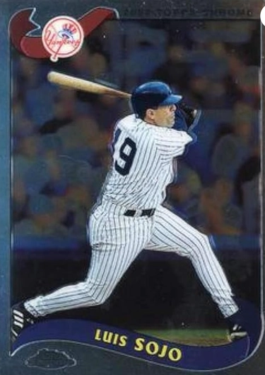

Luis Sojo
Career Highlights & Facts
(Facts are AI-generated and may require verification)
- Developed hand-eye coordination as a child by hitting flying metal bottle-caps with a wooden broomstick.
- Served as a mentor to a future Hall of Fame shortstop, teaching intricate defensive positioning and game awareness.
- Delivered a game-winning RBI single in the 9th inning of a decisive World Series game.
Would you like to find out more about Luis Sojo?
Player Biography
Luis Sojo
January 4, 2012
/
in
BioProject - Person
Venezuela
Venezuelans in the Major Leagues
/
by
admin
This article was written by
Richard Cuicchi
F
rom 1996 to 2003, the New York Yankees featured the Core Four (Derek Jeter, Jorge Posada, Mariano Rivera, and Andy Pettitte) and Bernie Williams as they collectively propelled the Yankees to six World Series in eight years, including four championships. The Yankees also had Luis Sojo, who wasn’t of the same caliber talent-wise as those five All-Stars but was nonetheless an important part of those dynastic teams.
The only seasons Sojo played as a regular were in 1991-92 as the second baseman with the California Angels and in 1995 as the shortstop with the Seattle Mariners. It was as a role player with the Yankees that he gained notoriety during his 13-year career. He never made an All-Star team, but his value to the Yankees was best evidenced by the fact that they traded for or signed him as a free agent six times. He collected as many World Series championship rings as the Core Four during 1996-2003.
1
His highest annual salary with the Yankees was $800,000, not in the millions like those of many of his Bronx teammates; yet he demonstrated that he merited every penny of it and possibly more.
Sojo was valuable to the Yankees as a versatile, dependable utility player. Manager Joe Torre liked having him around. Sojo made the most of his role by playing multiple infield positions, filling in for teammates when they needed a day’s rest, coming in as a late-inning defensive replacement, or making a pinch-hit appearance when the rest of the bench had been depleted. In the clubhouse he was a favorite of his better-known teammates. The Yankees thought enough of Sojo to twice sign him for the final month of the season.
Luis Beltran Sojo was born to Ambrosio and Cristina Mayorca de Sojo in Caracas, Venezuela, on January 3, 1965.
2
His father was a cab driver while his mother took care of the home duties. The family lived on Barrio 24 de Julio in Petare, a section of Miranda state, which holds a big portion of the Venezuelan capital city.
In this populous, working-class area, Luis grew up playing “chapitas,” the Venezuelan version of stickball that has been popular with children for the last 50 years – a street game that many current professional baseball players thank for helping them develop eyesight and hand-eye coordination. In chapitas, the batter uses a wood broomstick to hit a flying metal bottle-cap, which takes a lot of precision to do.
By going to school, playing chapitas, and working as a drinking water delivery boy, Luis spent his childhood idolizing former major-league shortstop and fellow Venezuelan Dave Concepción. Sojo said of the member of the Big Red Machine of the mid-1970s: “He was my hero, and he’s what got me thinking about being a professional ballplayer. He was the big guy in Venezuela, and at that time we didn’t have as many big-league players from Venezuela as we do now. He’s the guy that really inspired me.”
3
In January 1986 Sojo was signed by Dominican baseball scout Epy Guerrero, who was working for the Toronto Blue Jays at the time.
4
Guerrero ultimately signed more than 50 Latin-American major leaguers. Guerrero gave Sojo a bonus of $2,000. Luis used the money to buy a new kitchen, a washing machine and some home goods for his mother. “After that I only had 5,000 bolivares left, which I used to buy some new clothes for me, then I was broke again,” he recalled.
5
Sojo was 21 years old when he made his professional debut in the Dominican Summer League in 1986. The next season was his first in the United States, with Class-A Myrtle Beach. Two years later, he jumped straight to Triple-A Syracuse to start the season. He made his major-league debut on July 14, 1990, with Toronto and appeared in 33 games that season. He singled and drove in a run his first time at bat.
In making a relatively quick ascent to the majors, Sojo faced difficulties adapting to life in the United States. “The adjustment was very difficult, especially not being able to speak English,” he said. “It’s tough being by yourself here, especially the first couple of years, you’re very depressed. You just have to get into the country and learn from experience.”
6
In 1990 Sojo played in left field his first five games but then was used as an infielder, often coming in during the late innings for defensive purposes. He batted .225 and drove in nine runs.
After the 1990 season, Toronto made two significant roster changes that would contribute to two World Series championships. The Blue Jays acquired Roberto Alomar and Joe Carter in a trade with San Diego and received center fielder Devon White from California in a trade involving Sojo.
Sojo was the starting second baseman for most of the 1991 season with the seventh-place Angels, but he didn’t provide much offense. After starting the season with Triple-A Edmonton in 1992, he joined the Angels in late May and showed significant improvement (.272, 7 home runs, 43 RBIs). One of his season highlights included a 10th-inning two-run home run in the first game his parents saw him play in the majors.
7
The Angels traded Sojo back to Toronto after the 1992 season for Kelly Gruber, who had been a two-time All-Star and helped the Blue Jays win a World Series. There were questions at the time about why Toronto traded Gruber for the marginal Sojo. It was ultimately revealed that Gruber had begun suffering from a degenerative disk condition in his neck that he kept secret during the prior year.
8
Gruber’s major-league career ended during 1993 because of the injury.
The Blue Jays won their second consecutive World Series in 1993, but Sojo played in only 19 games and was not on the postseason roster. He was granted free agency after the season and signed with the Seattle Mariners. He secured the starting shortstop job in 1995. In the biggest moment of his career to that point, he had a key hit (a bases-clearing double on which he also scored on a throwing error) in a one-game playoff between the Mariners and the Angels that clinched the AL West title for the Mariners.
However, 19-year-old phenom Alex Rodriguez had started to get more playing time in 1995. He won the shortstop job coming out of spring training in 1996, relegating Sojo to a utility infielder role and ultimately making him expendable. Sojo was put on waivers in mid-August of 1996, and at that point he thought his career might be over.
9
But the New York Yankees claimed him, because manager Joe Torre was looking for someone to give shortstop Derek Jeter rest down the stretch. Torre wasn’t comfortable using his current backup infielders, weak-fielding Mariano Duncan and light-hitting Andy Fox, in that role.
10
At age 31, Sojo’s career was finally about to get a lot more interesting. When he failed to claim a starting job with the Yankees, he adopted the attitude necessary for a backup player. “You have to have a strong mind to have that (bench) role,” Sojo said. “No doubt in my mind that I want to play every day when I wasn’t, but you have to prepare yourself for every time you go out there and do the best you can.”
11
Sojo took advantage of his opportunities at second base, as well as backing up Jeter, as the Yankees won the AL East Division by four games over Baltimore. When they advanced to the World Series against Atlanta, Sojo appeared as a substitute in five games, getting three hits in five at-bats. The Yankees won their first fall classic since 1978 in six games.
Torre wound up using four players at second base in 1997, with Sojo playing in 77 games (51 starts). He had his best major-league batting average (.307). However, in mid-August he suffered a fractured left forearm and missed the remainder of the regular season as well as the playoffs.
12
Sojo was slated by Torre to be the starting second baseman in 1998 until the Yankees acquired Chuck Knoblauch from Minnesota. With the addition of the four-time All-Star, Torre had to explain to Sojo that he wasn’t going to get many at-bats; but he needed Sojo to be ready to play when called on to substitute.
“I got a call from Derek Jeter in January 1998 after I found out they had signed Knoblauch,” Sojo said. “I was trying to get out of the Yankees and find some place where I could play regularly. I was so pissed after they promised me they would give me the starting job on second base. Jeter said, ‘Luis, don’t do anything crazy, man, I have a friend here with me who wants to talk to you. Suddenly on the other side of the phone I heard: ‘Hey Luis, this is George Steinbrenner!’ I was like: ‘Who?’ I hung up. I was like, stop making fun of me. Then again, the phone rang and it was the Boss himself and he said: ‘Hey Luis, stop being pissed, man, I know how you feel the way the situation was treated, but the guys want you on the team, so I will give you two years. How much money do you want?’ So seriously, I said, ‘Give me five minutes and I’ll call you back.’ I grabbed the phone, I called my agent and told him, ‘Hey man, how are you? I’m calling you to tell you that you are fired from representing me.’ I called back Jeter and Steinbrenner and said, OK, now we can talk.’ So, Mr. Steinbrenner rewarded me with a $1.9 million contract which I took without hesitation.”
Sojo said he got sound guidance from Yankees bench coach Don Zimmer that a good attitude as a role player would allow him to spend a lot of years with the team.
13
Zimmer’s counseling turned out to be valuable advice for Sojo’s future.
When Jeter went on the injured list in early June, Sojo filled in as the everyday shortstop. The Yankees wound up having one of the best seasons in their storied history, as they won 114 regular-season games. Their postseason was a cakewalk: They lost only two of their 13 games, including a sweep of the San Diego Padres in the World Series. Sojo played in only one postseason game, as a defensive replacement in the Championship Series.
Sojo and the 24-year-old Jeter developed a mentor-pupil relationship early in Jeter’s career. They frequently sat together in the dugout and talked about game situations. Known for his defensive abilities, Sojo taught Jeter various fielding intricacies.
14
As a result, Jeter would credit Sojo as one of the primary teammates from whom he learned the most.
15
Learning from his own experiences from his first few pro seasons, Sojo also took new Latin players under his wing in the clubhouse, in order to ease their transition to the big leagues. He helped them overcome the language barrier and assimilate with the other players on the team. “I like to talk to the young guys,” Sojo said, speaking not only of the Latin players who made it to the Bronx, but of prospects from his native Venezuela. “That’s the way I am. I like to make it easier for everybody. The most important thing is to stay together, and for us to win.”
16
The Yankees repeated as division champions in 1999, with Sojo playing in 49 regular-season games (33 starts). They dominated again in the postseason, losing only one of 12 games, including a sweep of Atlanta in the World Series. Sojo played sparingly (one at-bat) in the League Championship Series against Boston. When his 72-year-old father, Ambrosio, died during the LCS, Torre requested a special exemption to allow a substitute for Sojo while he was to miss the first two games of the World Series to attend his father’s burial in Venezuela. Torre had been concerned about Knoblauch’s defensive play (26 errors during the regular season) and felt he needed Sojo’s availability as a defensive replacement. After the request was denied by Commissioner Bud Selig, Torre decided to leave a roster spot open for him when he returned.
17
As it turned out, the Yankees didn’t need Sojo, because they swept the Braves. Sojo wound up making an appearance in Game Four.
The Yankees released Sojo after the 1999 season, and he signed with the Pittsburgh Pirates, where he played a similar utility role in 2000. However, the Yankees thought enough of him to reacquire him in early August after Knoblauch went on the injured list. When the Yankees were struggling at midseason, former Yankees teammates Jeter and Williams had approached GM Brian Cashman about getting Sojo back on the roster.
18
It turned out to be one of the most valuable player transactions the Yankees made that season.
Sojo played well in Knoblauch’s place, hitting .288 with 17 RBIs in 34 games. The Yankees won the division by 2½ games over Boston. Sojo then saw his most action in a postseason, playing in 15 games. The Yankees defeated Oakland in the Division Series, Seattle in the Championship Series, and the New York Mets in five games as they captured their third consecutive World Series championship. In the World Series, Sojo provided the two-out game-winning RBI single in the ninth inning of Game Five off Al Leiter. Sojo said after the game. “This is the happiest day of my life.”
19
He collected 11 hits and 9 RBIs during the postseason.
Rookie Alfonso Soriano took over the Yankees’ second base spot in 2001, and once again Sojo was relegated to the backup role at all of the infield positions. He had the worst offensive season of his career, batting .165 and barely playing during the last month of the season. Sojo was surprised that Torre put him on the postseason roster. In deciding on him for the final spot, Torre said, “I felt more comfortable with an experienced guy, especially someone who has been with us for six years and has participated in what we have accomplished.”
20
The Yankees captured their fourth consecutive pennant in 2001 but were defeated by the Arizona Diamondbacks in seven games in the World Series. Sojo delivered an RBI single in Game Six.
Sojo talked openly about retirement during the World Series, expressing a desire to eventually return as a coach or manager.
21
The Yankees granted him free agency after the season, but two months later he signed with them for the fifth time. However, the 37-year-old didn’t make the team coming out of spring training, having lost his utility role to switch-hitting Enrique Wilson. Torre and Sojo’s teammates were sad about his departure, praising his ability to get a clutch hit after sitting on the bench for days and his presence in the clubhouse with the younger players. Bernie Williams said, “He’s the ultimate team player.” Torre told Sojo the Yankees wanted to keep him in the organization.
22
Sojo jumped at a chance to replace Stump Merrill as the manager of Double-A Norwich at midseason in 2002, and the team wound up winning the Eastern League title.
The 2003 season turned into a bizarre one for Sojo. He served as a special instructor for the Yankees in spring training, but then had a stint of 22 games as a player in the Mexican League. He hit a run-scoring single in the Yankees’ Old-Timers Game.
23
The Yankees added Sojo to the major-league staff as a special-assignment instructor in late June, but he wasn’t allowed to sit in the dugout during games, because the team was at its limit of six coaches. He was the Yankees’ first Hispanic coach since Jose Cardenal in 1999, and his main job was to smooth the path to stardom for second baseman Soriano, who was still learning how to play the position.
24
The Yankees surprisingly activated Sojo in September for insurance when Jeter suffered a rib-cage injury, but he played in only three games. Torre couldn’t put Sojo on the postseason roster because he had been activated after the deadline. The Yankees won their fifth pennant in six years, but lost to the Florida Marlins in the World Series.
Always a favorite of Torre, Sojo took the Yankees’ third base coaching job in 2004 and 2005. He continued in the Yankees organization by managing Class-A Tampa and the Yankees’ Gulf Coast League affiliate for eight seasons between 2006 and 2017.
Sojo maintained his ties to his native country throughout his career and became one of the biggest stars and one of the most impactful players in the Venezuelan League history, becoming the historical face of the Cardenales de Lara franchise, based in Barquisimeto, a city that considers Sojo its son. With the Cardenales he won five batting titles: 1989-90 (.351); 1990-91 (.362); 1993-94 (.375); 1994-95 (.376); and 1999-2000 (.346).
25
Sojo was a four-time champion as a player with Cardenales.
Sojo managed the Venezuelan entry in the World Baseball Classic three times (2006, 2009, and 2013), taking third place in 2009. He spent time as a manager in the Venezuelan League, first as player-manager with the Cardenales, then won the title and represented Venezuela in the Caribbean Series with the Navegantes del Magallanes, and also managed the Tigres de Aragua. Sojo has also managed the Toros de Tijuana in the Mexican League, the Caneros de Los Mochis and Aguilas de Mexicali in the Mexican Pacific League, and the Tigres del Licey in the Dominican Winter League. He was a part-owner of Astronautas de Chiriqui of the Panamanian Baseball League, winning a title and representing Panama in the Caribbean Series.
Sojo is a member of the Venezuelan Baseball Hall of Fame and the Caribbean Series Hall of Fame.
In 2018 Sojo summed up his major-league career: “Being on that (1998) team was the best thing that happened to me in all the years I’ve been in baseball. After playing for the Blue Jays in 1993, I was really close to retiring. I told my wife that I had enough. I had a lot of injuries, and I was frustrated. Then I went to Seattle where I had my best year as a player in 1995. I got put on waivers in 1996, and that was disappointing. I didn’t know what I had to do to stay in the big leagues. When I got to the Yankees, I not only got an opportunity to stay in the big leagues for a while, but I was also winning. I still can’t believe that we won 125 (including postseason) games that season and that I ended up playing on two more championship teams after that. It was a great run.”
26
Sojo had hit the proverbial jackpot when he landed with the Yankees after being claimed off waivers in August 1996. It could be said he was in the right place at the right time. Better known for his defensive skills, he was an average player, who could have wallowed in relative obscurity had he continued to play for practically any other major-league team. Instead, he developed into an important role player between 1996 and 2003 and wound up sharing the glory with many All-Stars. His worth transcended his games played and batting average.
Sojo and his wife, Zuleima, have three children, two daughters, Lesluis and Lyz, and a son, Luis.
Last revised: January 31, 2026
SOURCES
In addition to the sources cited in the Notes, the author consulted
Baseball-Reference.com
. Thanks to Leonte Landino for contributing valuable information.
Photo credit: Luis Sojo,
Jerry Coli / Dreamstime.
NOTES
1
Jeter, Posada, Pettitte, and Rivera won a fifth World Series in 2009, after Sojo retired as a player.
2
Helene Elliott, “Sojo Hits One to Paste Up in Family Album,”
Los Angeles Times
, August 24, 1992: C9.
3
Mike Henry, “Amigo de Todos,”
Yankees Magazine
, Vol. 19, Issue 5, August 1998: 48.
4
Helene Elliott, “Lacking Influence: Angels Trying to Re-Establish Their Ties to Major Talent Source – Latin America,”
Los Angeles Times
, March 31, 1991: C6.
5
Luis Sojo interview by Leonte Landino on February 8, 2021. Unless otherwise indicated, all quotations attributed to Sojo come from this interview.
6
Henry, “Amigo de Todos.”
7
Elliott, “Sojo Hits One to Paste Up in Family Album.”
8
Dave Cunningham, “California Angels,”
The Sporting News
, February 8, 1993: 33.
9
Alfred Santasiere, “Perfect Fit,”
Yankees Magazine
, April 2018: 168.
10
Lyle Spatz,
Yankees Coming, Yankees Going
(Jefferson, North Carolina: McFarland & Company, 2000), 296.
11
“Sojo’s Time to Shine,”
Yankees Magazine
, Vol. 18, Issue 4, July 1997: 6.
12
Jack Curry, “Sojo Optimistic on Return Despite Breaking Forearm,”
New York Times
, August 15, 1997: B13.
13
Santasiere.
14
Lawrence Rocca, “Derek Jeter Heart of the Yankees,”
Baseball Digest
, July 1999: 26.
15
“Derek Jeter Baseball Profile,”
Baseball Digest
, June 2000: 59.
16
Peter Caldera, “Following in His Footsteps,”
Yankees Magazine
, Volume 19, Issue 4, July 1998: 46.
17
Buster Olney, “Sojo’s Absence Presents Challenge for Yanks,”
New York Times
, October 23, 1999.
18
Joe LaPointe, “Sojo Gets the Call and Delivers Again,”
New York Times
, October 27, 2000: D6.
19
LaPointe.
20
Steve Popper, “Sojo Gets the Call,”
New York Times
, October 11, 2001: S4.
21
Buster Olney, “Sojo Ends Retirement for Chance with Yankees,”
New York Times
, January 9, 2002: D7.
22
Tyler Kepner, “The Show Comes to an End for the Yanks’ Sojo,”
New York Times
, March 29, 2002: D2.
23
Joe LaPointe, “Glory Days Are Here Again,
New York Times
, July 20, 2003:8, 3.
24
John Levesque, “Yankees Make Use of Sojo’s Mojo,”
Seattle Post-Intelligencer
, August 7, 2003.
https:
. Accessed August 12, 2019.
25
2009 World Baseball Classic Media Guide
, 174.
26
Santasiere.
Full Name
Luis Beltran Sojo Sojo
Born
January 3, 1965 at Caracas, Distrito Federal (Venezuela)
Stats
Baseball Reference
Retrosheet
Tags
Venezuela
·
Venezuelans in the Major Leagues
Career Totals
| WAR | AB | H | HR | BA | R | RBI | SB | OBP | SLG | OPS | OPS+ |
|---|---|---|---|---|---|---|---|---|---|---|---|
| 4.2 | 2571 | 671 | 36 | .261 | 300 | 261 | 28 | .297 | .352 | .650 | 71 |
Statistics via Baseball-Reference.com
The Original Clue